HIST 270 · History of China · Chapter 3 · Lecture 1
The Qin Unification: Power, Law, and the First Empire
256–206 BCE · Turning Conquest into Government · Law, Labor, and the Imperial Machine · Collapse and Legacy Background essay ↗
Course title card (terracotta warrior, Qin map, coin). A designed graphic, not a historical source.
Central claim · Qin, 221–206 BCE
How Qin Turned Conquest into Empire
Central claim: Qin combined appointed officials, shared standards, law, infrastructure, and coerced labor to turn military conquest into a centralized imperial system.
Those tools made Qin extraordinarily powerful—but their intensive demands also made the regime fragile.
Qin created durable institutions, but concentrated power and mobilization made succession and rebellion especially dangerous.
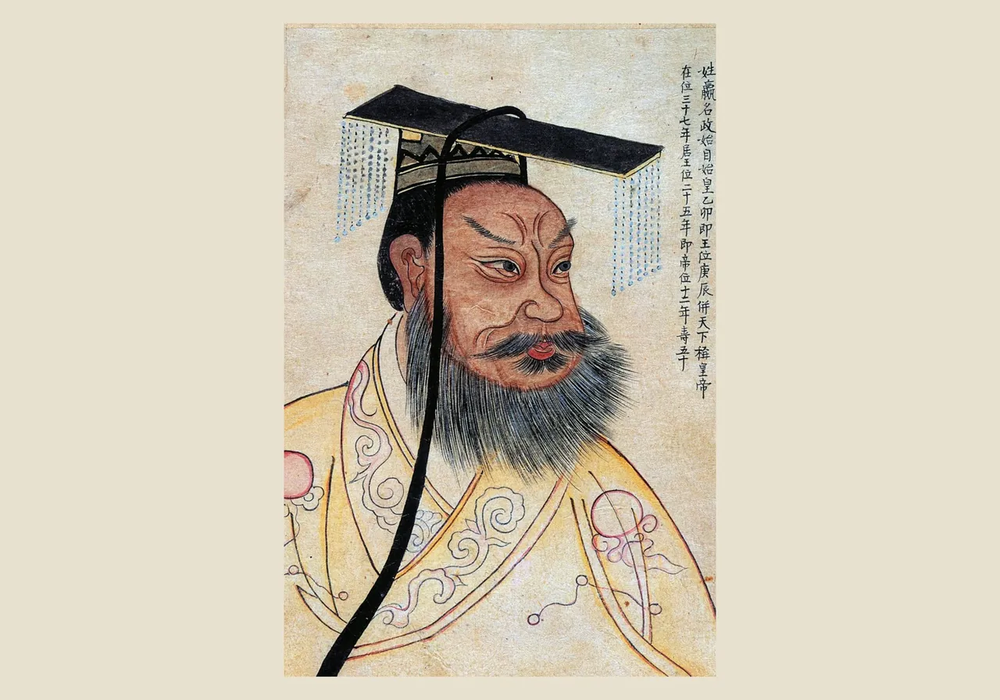
Later imagined portrait of the First Emperor; painted centuries after his death.
Sources: Ebrey, Ch. 3, pp. 36–43.
Start here · How to study this deck on your own
Three Parts, Self-Checks, and a Narration Button Guide You Through This Deck
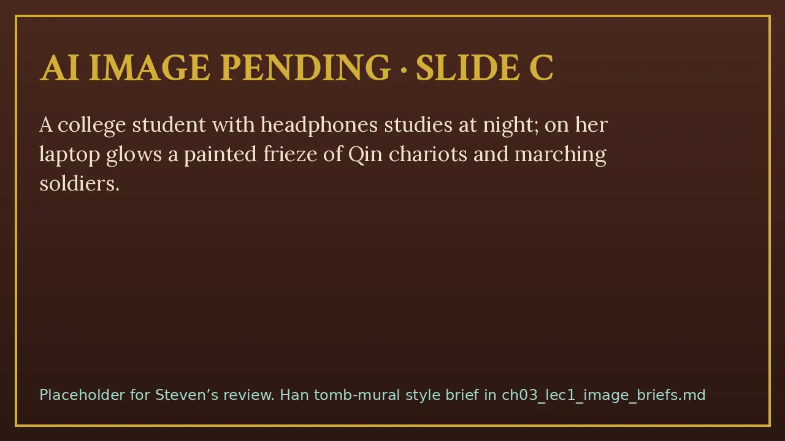
A college student with headphones studies at night; on her laptop glows a painted frieze of Qin chariots and marching soldiers. AI-generated interpretation in Han tomb-mural style, not a historical record.
Click Narration (lower right) or press N for each slide's Study Buddy notes.
Work through three parts; each ends with a self-check.
Two Reading Guide checkpoints follow Part 2.
Click a teal dotted word for a definition; the Pierian Spring is required study.
Arrow keys move; Esc shows a slide map. All due dates are on Canvas.
×
Qin
Qin (chin): the northwestern Warring States kingdom that destroyed the Zhou royal domain in 256 BCE and the last independent state in 221 BCE (p. 36). Popups like this one close with Esc, the × mark, or a click outside the card.
Sources: Ebrey, Ch. 3, pp. 36–43.
Roadmap · Build the machine, then test it
Where We’re Going Today
Build the Machine
Reforms and Legalist statecraft Appointed officials and shared standards
Law, records, and accountability
Test the Machine
Infrastructure and coerced labor Succession crisis and rebellion
Collapse of the dynasty, survival of the system
Question: How did Qin make unity governable—and why did that success become a weakness?
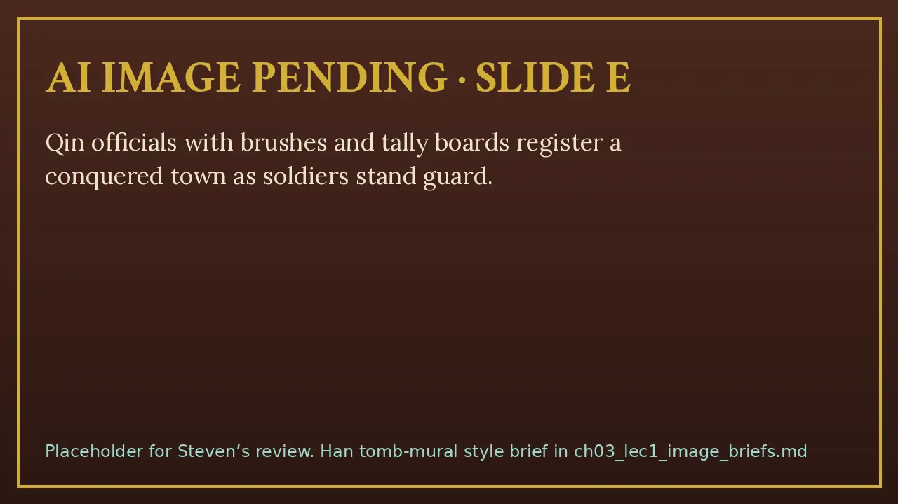
Segment 1 of 3 · Part 1
Turning Conquest into Government
How uniformity concentrated power — Q1
Qin officials register a conquered town while soldiers stand guard. AI-generated interpretation in Han tomb-mural style, not a historical record.
Part 1 · Q1 · The Qin homeland
Qin’s Geographic Advantage—But Not Geography Alone
Northwestern position with natural defensive advantages
Fertile Wei River valley supported agriculture
Frontier warfare built military experience
Some distance from eastern aristocratic traditions created room for reform
Geography helped Qin compete; institutions and military organization made conquest possible.
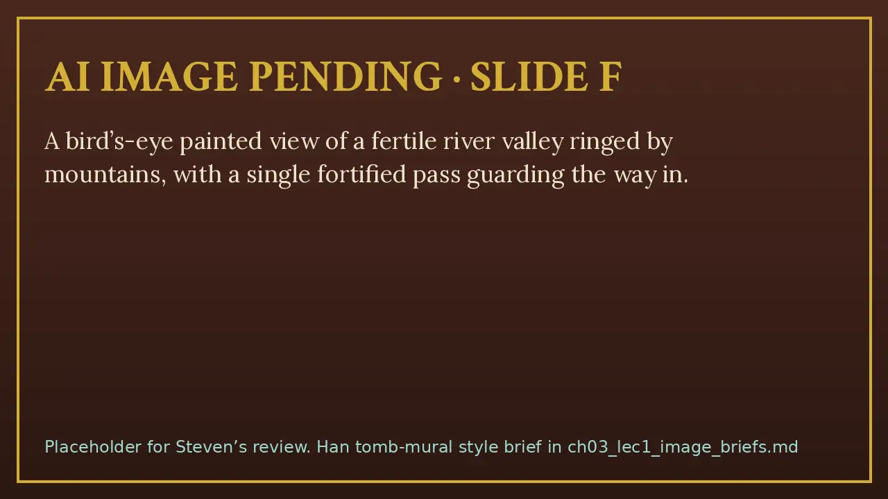
A bird’s-eye painted view of a fertile river valley ringed by mountains, with a single fortified pass guarding the way in. AI-generated interpretation in Han tomb-mural style, not a historical record.
Sources: Ebrey, Ch. 3, pp. 37–38; Map 3.1.
Part 1 · Q1 · Fourth-century reforms
Shang Yang: Reforming Qin from Within
Curtailed hereditary aristocratic privilege and tied rank and reward increasingly to service
Military merit—including captured enemy heads—could bring promotion within a graded system
Appointed local officials strengthened the ruler’s direct relationship with subjects
Agricultural production and migration policies expanded Qin’s tax and military base
The goal was a state able to measure, reward, tax, and mobilize people.
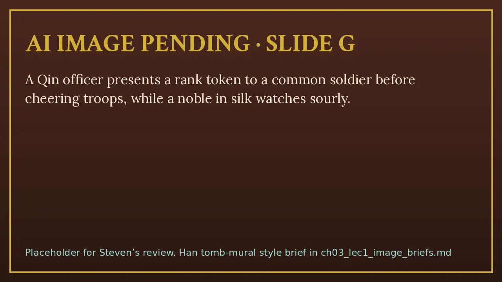
A Qin officer presents a rank token to a common soldier before cheering troops, while a noble in silk watches sourly. AI-generated interpretation in Han tomb-mural style, not a historical record.
Sources: Ebrey, Ch. 3, p. 37; Ch. 2, p. 31 (Lord Shang).
Part 1 · Q1 · The merchant chancellor
Qin Was Not Always Purely Legalist
Lü Buwei, wealthy merchant and Qin chancellor
Sponsored scholars from multiple intellectual traditions
Annals of Mr. Lü tried to synthesize competing schools
Advised rulers to support agriculture, manage burdens, encourage commerce, and select capable ministers
Before the conquest, Qin political thought was more mixed than “Qin = Legalism” suggests.
A wealthy merchant-chancellor in rich robes hosts scholars from rival schools who argue around low tables piled with bamboo books. AI-generated interpretation in Han tomb-mural style, not a historical record.
Sources: Ebrey, Ch. 3, pp. 37–38.
Part 1 · Q1 · Legalism, part 1 of 2
Legalism: Law, Rewards, and State Capacity
Core ideas
Clear, publicly knowable laws
Rewards and punishments shaped behavior
Centralized authority in the ruler
Measured performance mattered more than inherited privilege
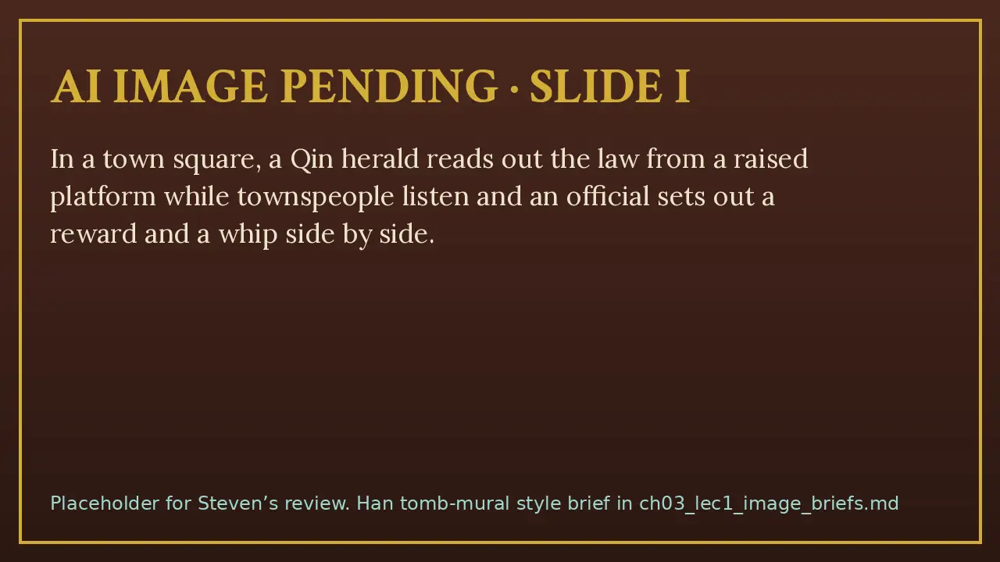
In a town square, a Qin herald reads out the law from a raised platform while townspeople listen and an official sets out a reward and a whip side by side. AI-generated interpretation in Han tomb-mural style, not a historical record.
Sources: Ebrey, Ch. 3, p. 37; Ch. 2, p. 31.
Part 1 · Q1 · Legalism, part 2 of 2
Legalism: Law, Rewards, and State Capacity (continued)
Political technique
Officials were monitored and held accountable
Administrative methods controlled the state’s agents
Moral persuasion alone was not enough to govern
Han later kept many techniques while promoting Confucian learning
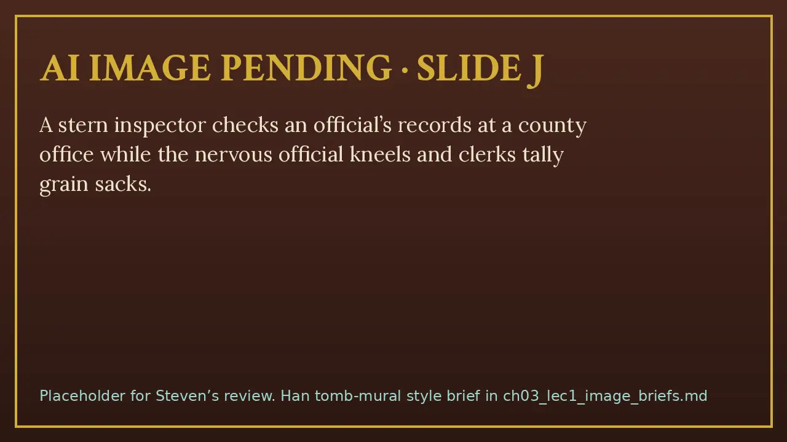
A stern inspector checks an official’s records at a county office while the nervous official kneels and clerks tally grain sacks. AI-generated interpretation in Han tomb-mural style, not a historical record.
Sources: Ebrey, Ch. 3, pp. 36–38.
Part 1 · Q1 · The Legalist chancellor
Chancellor Li Si and the Final Conquests
Li Si (李斯)
Studied under Confucian master Xunzi
But became fully committed to Legalism
Like Han Feizi, chose practical statecraft over moral philosophy
Rose to become Qin's most powerful chancellor
×
Li Si
The First Emperor's chancellor and chief Legalist architect, central to administrative reform, writing standardization, and the book burning.
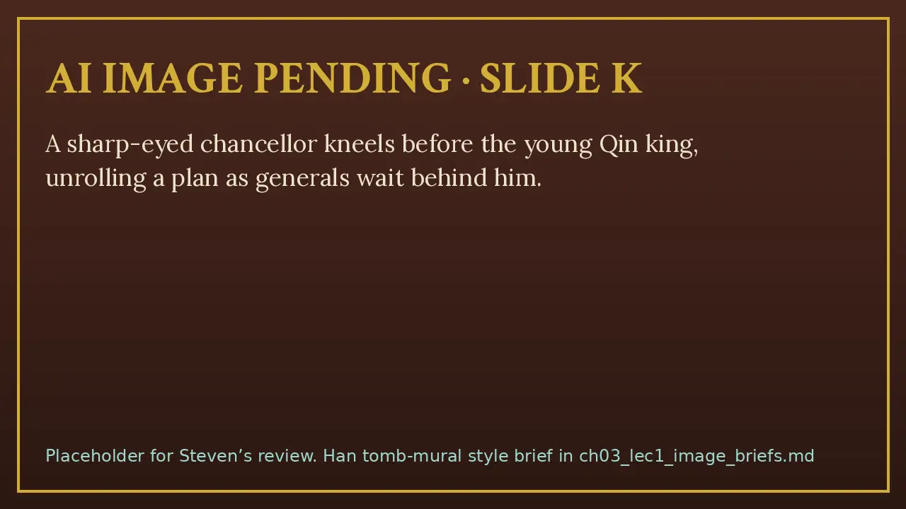
A sharp-eyed chancellor kneels before the young Qin king, unrolling a plan as generals wait behind him. AI-generated interpretation in Han tomb-mural style, not a historical record.
Sources: Ebrey, Ch. 3, p. 38.
Part 1 · Q1 · Nine years of conquest
The Final Six States
230 BCEHan conquered
228 BCEZhao conquered
225 BCEWei conquered
223 BCEChu conquered
222 BCEYan conquered
221 BCEQi conquered
Sources: Ebrey, Ch. 3, p. 38; dates from Sima Qian, Shiji 6.
Part 1 · Q1 · 256–221 BCE
Victory Created a New Problem
Zhou authority ended in 256 BCE
Final states fell by 221 BCE
Former enemies became imperial subjects
Legalism moved from theory to rule
Winning the war required force; governing the peace required institutions.
×
Legalism
A statecraft tradition emphasizing clear laws, automatic rewards and punishments, administrative technique, and concentrated ruler power.
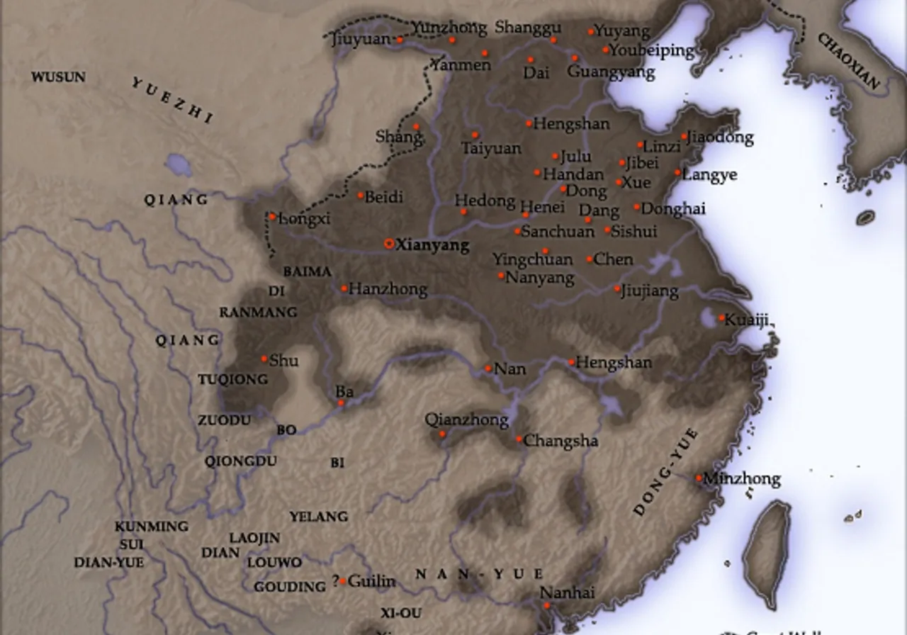
From one competing state to one imperial realm. Modern map.
Sources: Ebrey, Ch. 3, pp. 36–38; Map 3.1.
Part 1 · Q1 · Officials, not lords
Bureaucracy Broke Hereditary Power
Old Regional Order
New Imperial Order
Nobles rooted in ancestral lands
Nobles relocated to Xianyang
Offices treated as hereditary rights
Officials appointed and removable
Local power could resist rulers
Li Si designed administrative control
Office now flowed from imperial favor, not inherited land.
×
Xianyang
The Qin capital near modern Xi'an, where nobles from defeated states were relocated under imperial supervision.
×
Li Si
The First Emperor's chancellor and chief Legalist architect, central to administrative reform, writing standardization, and the book burning.
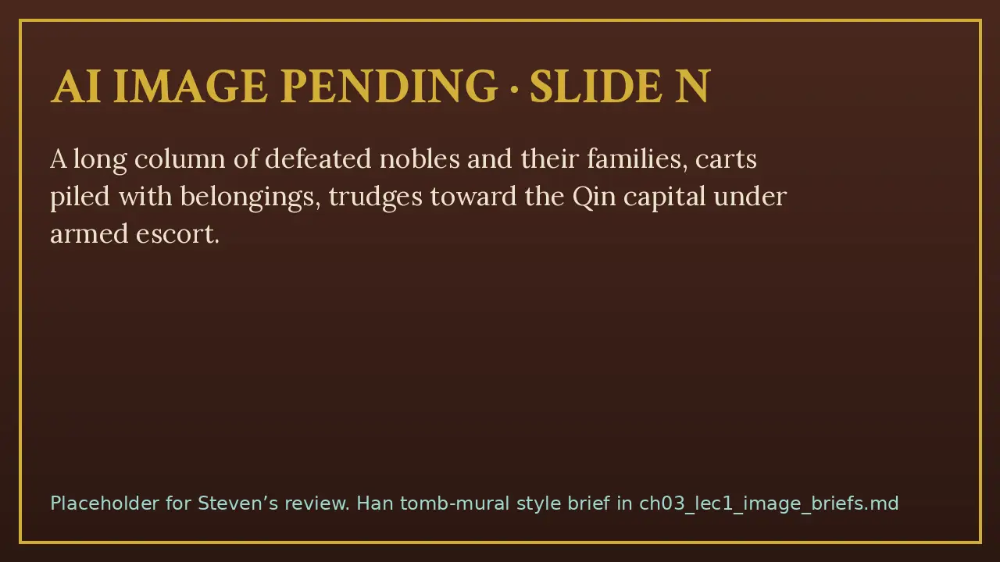
A long column of defeated nobles and their families, carts piled with belongings, trudges toward the Qin capital under armed escort. AI-generated interpretation in Han tomb-mural style, not a historical record.
Sources: Ebrey, Ch. 3, pp. 38–39.
Self-check · Segment 1 · not graded
Check Yourself: Turning Conquest into Government
Answer each question from memory, out loud or on paper, then click Show answer. Nothing here is graded or recorded.
1. What did Shang Yang's reforms tie rank and reward to?
Increasingly to service, especially military merit, instead of hereditary aristocratic privilege (p. 37).
2. What did the Annals of Mr. Lü try to do?
Synthesize the competing schools: for example, a tranquil ruler as Laozi advised, wise ministers in a Confucian spirit, help for farmers and merchants (pp. 37–38).
3. Name two core Legalist ideas.
Any two: clear, publicly knowable laws; rewards and punishments; centralized authority in the ruler; measured performance over inherited privilege.
4. Which state fell last, and in what year?
Qi, in 221 BCE, completing a conquest that began in 230 BCE (p. 38).
5. Why did the First Emperor move nobles to Xianyang?
So they could be watched and could no longer command regional networks; officials appointed by the emperor replaced them (p. 38).
6. Who designed Qin's administrative control?
Li Si, a Legalist chancellor who had studied under Xunzi (p. 38).
Conscripts and convicts haul earth for a new road under an overseer. AI-generated interpretation in Han tomb-mural style, not a historical record.
Part 2 · Q1 · One set of standards
Standardization Made Commands Travel
One writing system carried official orders
Shared weights, measures, and coinage made resources easier to assess
Administrative divisions, roads, canals, and axle standards linked regions
Regional differences remained, but the state could operate across them more predictably
Standardization → administrative predictability → stronger central control
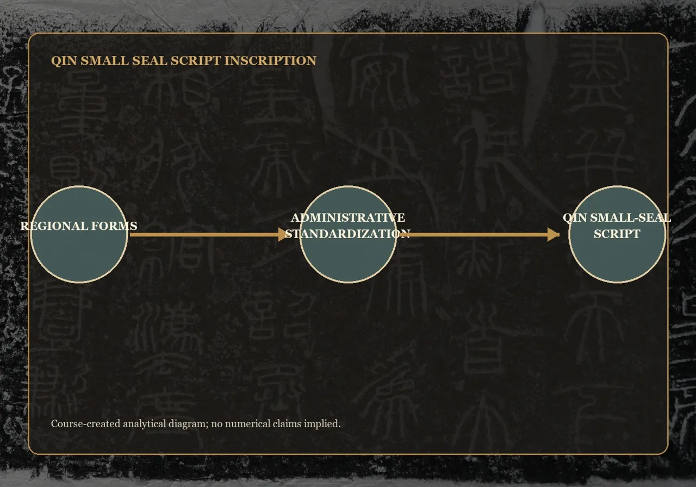
Shared systems made communication, taxation, and mobilization easier. Course-made teaching graphic.
Sources: Ebrey, Ch. 3, p. 39; Figure 3.1, p. 38.
Part 2 · Q1 · 213 BCE
Book Burning: Limiting Competing Uses of the Past
Later sources attribute the order to Chancellor Li Si in 213 BCE
Texts used to criticize Qin through earlier models were treated as politically dangerous
Practical writings—such as medicine and agriculture—were reportedly exempted
Preserved copies and later Han accounts complicate the image of total destruction
Qin rulers feared scholars could use the past to challenge the present regime.
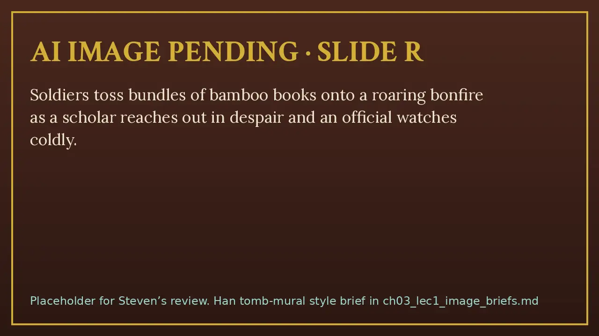
Soldiers toss bundles of bamboo books onto a roaring bonfire as a scholar reaches out in despair and an official watches coldly. AI-generated interpretation in Han tomb-mural style, not a historical record.
Sources: Ebrey, Ch. 3, p. 39.
Part 2 · Q2 · Archaeology and the law
Archaeology Changed Our Picture of Qin Law
1975: 625 bamboo strips found at Shuihudi
Detailed statutes and bureaucratic procedures
Reporting duties and administrative accountability
Graded punishments, mutual responsibility, and penal labor
Qin law was harsh, but it was also highly procedural and administrative.
×
Shuihudi bamboo strips
Six hundred twenty-five Qin legal and administrative texts discovered in a Hubei tomb in 1975, providing direct evidence of Qin law.
×
Mutual-responsibility units
Groups of five households required to report one another's crimes or risk receiving the offender's punishment themselves.
×
penal labor
Forced work imposed as punishment or used to discharge fines, supplying labor for Qin roads, canals, walls, and the imperial tomb.
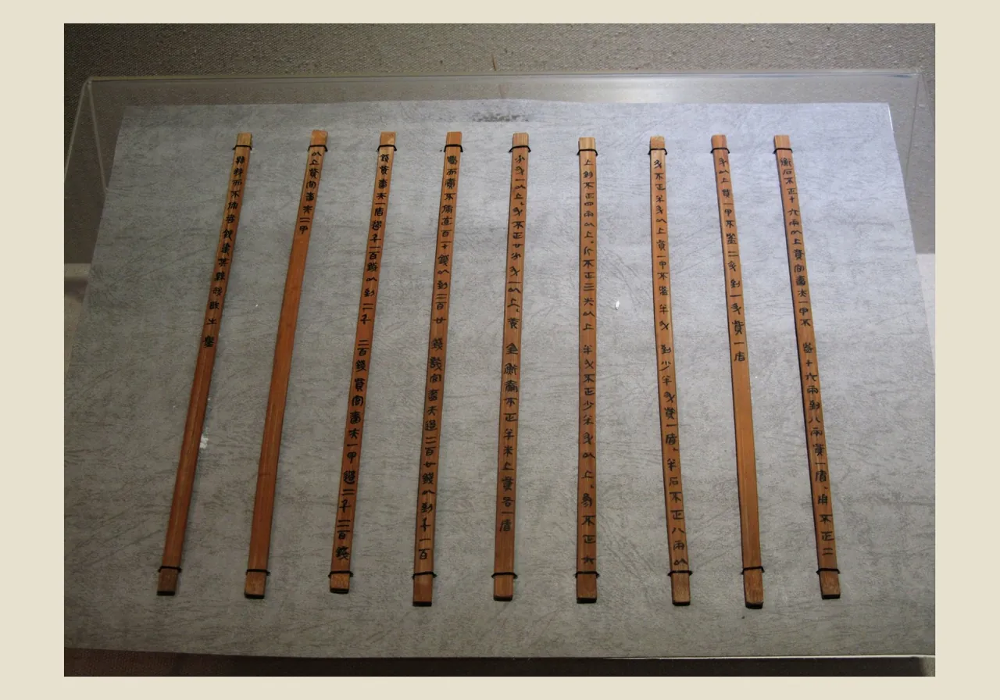
Excavated legal texts reveal a working administrative system. Photograph of excavated Qin bamboo strips.
Sources: Ebrey, Ch. 3, p. 41.
Part 2 · Q2 · Law into labor, part 1 of 2
Law Turned People and Resources into Labor
How it worked
Convictions produced penal labor
Fines could become workdays
Households owed required service
Officials faced measured penalties
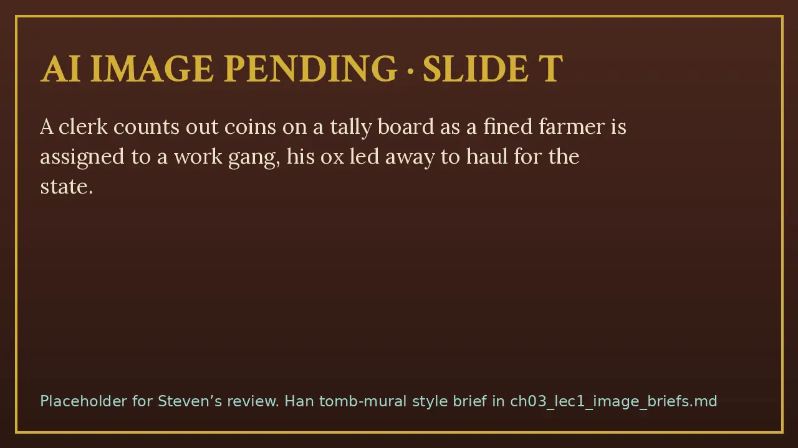
A clerk counts out coins on a tally board as a fined farmer is assigned to a work gang, his ox led away to haul for the state. AI-generated interpretation in Han tomb-mural style, not a historical record.
Sources: Ebrey, Ch. 3, pp. 39, 41.
Part 2 · Q2 · Law into labor, part 2 of 2
Law Turned People and Resources into Labor (continued)
What it built
Roads and canals
Frontier defenses
Palaces and the imperial tomb
Army supply systems
Qin’s building capacity depended on counting people, imposing obligations, and directing resources.
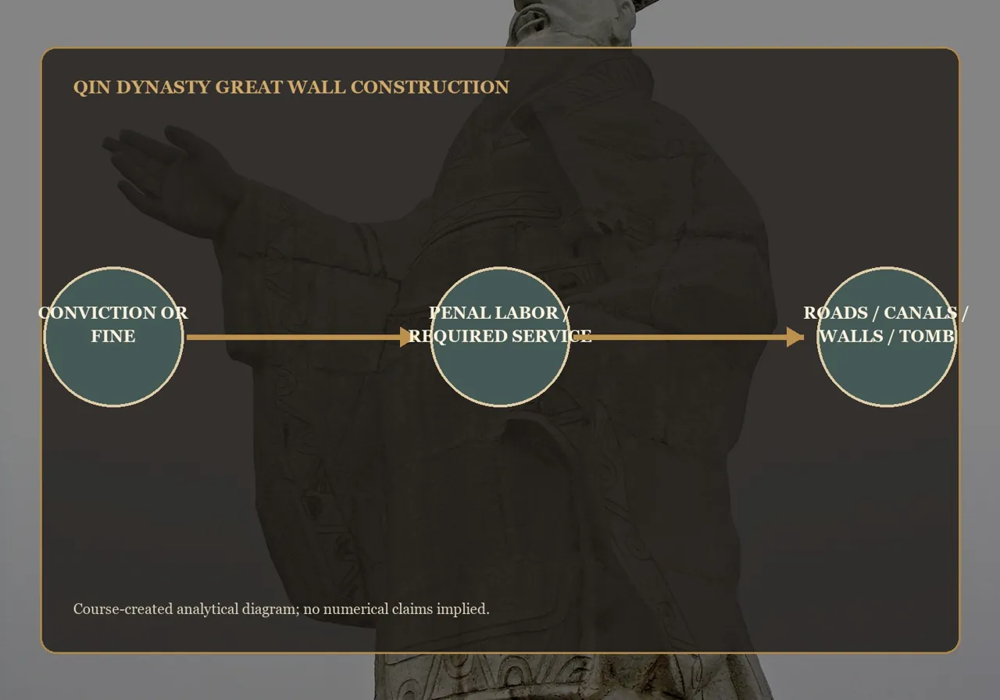
How sentences became projects. Course-made teaching graphic.
Sources: Ebrey, Ch. 3, pp. 39, 41–42.
Part 2 · Q2 · The northern frontier, 215 BCE
Frontier Walls and the Cost of Defense
Meng Tian led major northern campaigns around 215 BCE
Qin connected, extended, and constructed frontier walls
Roads, forts, garrisons, and supply lines required labor
The wall visible today largely reflects much later rebuilding, especially under the Ming
Defense strengthened the empire while intensifying demands on its subjects.
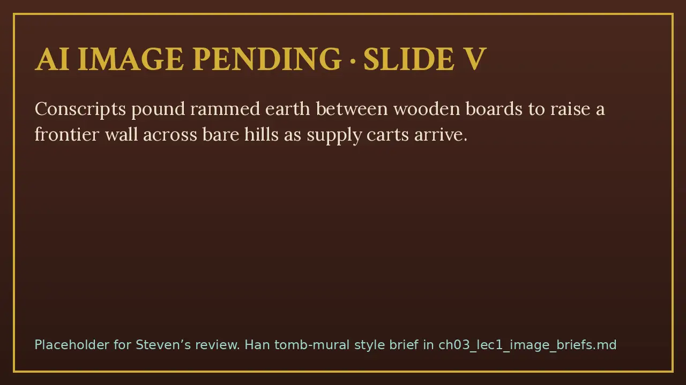
Conscripts pound rammed earth between wooden boards to raise a frontier wall across bare hills as supply carts arrive. AI-generated interpretation in Han tomb-mural style, not a historical record.
Sources: Ebrey, Ch. 3, pp. 41–42.
Self-check · Segment 2 · not graded
Check Yourself: Law, Labor, and the Imperial Machine
Answer each question from memory, out loud or on paper, then click Show answer. Nothing here is graded or recorded.
1. How did standardization strengthen central control?
A shared script let orders travel; shared measures and coins let officials assess taxes and supplies; roads, canals, and axle standards linked regions (p. 39).
2. What kinds of books were spared in 213 BCE?
Practical writings, such as manuals on medicine and agriculture (your textbook adds divination) (p. 39).
3. What did the Shuihudi strips reveal about Qin law?
It was harsh but procedural: detailed statutes, reporting duties, graded punishments, mutual responsibility, and penal labor (p. 41).
4. How could a fine become labor?
People who could not pay worked it off, credited at eight coins a day, or six with food rations (p. 41).
5. Name two things Qin's labor system built.
Any two: roads and canals, frontier defenses, palaces and the imperial tomb, army supply systems (pp. 39, 41–42).
6. Is the Great Wall visible today Qin's wall?
No. Qin's rammed-earth wall lay farther north; the brick-and-stone wall seen today is largely Ming (p. 42).
How did the First Emperor of Qin consolidate his power and enforce uniformity across the Chinese realm after defeating the final independent states in 221 B.C.E.?
Evaluate the role of Qin law as a mechanism for state control and massive infrastructural development. How did the state’s penal system dictate the lives of its subjects?
Qin built a state too strong for its subjects to bear and too useful for its successors to abandon. How did law connect control to construction? State your answer to Q2 as a causal claim.
Why did Qin fall so quickly—and why did its imperial model endure?
An imperial procession halts at night as a secret letter changes hands. AI-generated interpretation in Han tomb-mural style, not a historical record.
Part 3 · Collapse · 210 BCE
Succession Concentrated Risk at the Center
210 BCE:First Emperor died while traveling
Li Si and Zhao Gao manipulated the succession; Prince Fusu was forced to die
A younger Second Emperor inherited a system built around concentrated authority
Palace intrigue removed experienced leadership while regional pressure grew
Centralization made Qin powerful—and made a failed succession dangerous everywhere at once.
×
Huangdi
The title invented by the First Emperor in 221 BCE, translated as “emperor” or “august theocrat,” and used by Chinese emperors until 1912.
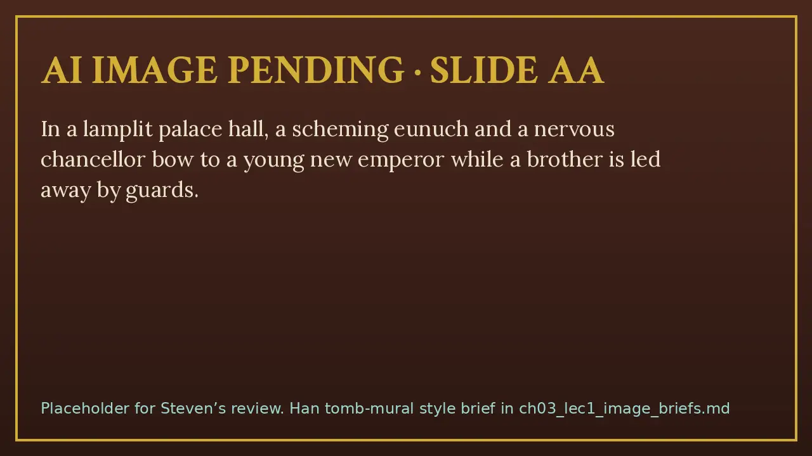
In a lamplit palace hall, a scheming eunuch and a nervous chancellor bow to a young new emperor while a brother is led away by guards. AI-generated interpretation in Han tomb-mural style, not a historical record.
Sima Qian later reported that they believed missing the deadline meant death
Rather than submit, they rebelled and helped ignite Qin’s collapse
Rebellion spread as former regional elites and military leaders entered the struggle
Historical caution: Excavated Qin law suggests the traditional story may simplify or dramatize the actual penalty structure.
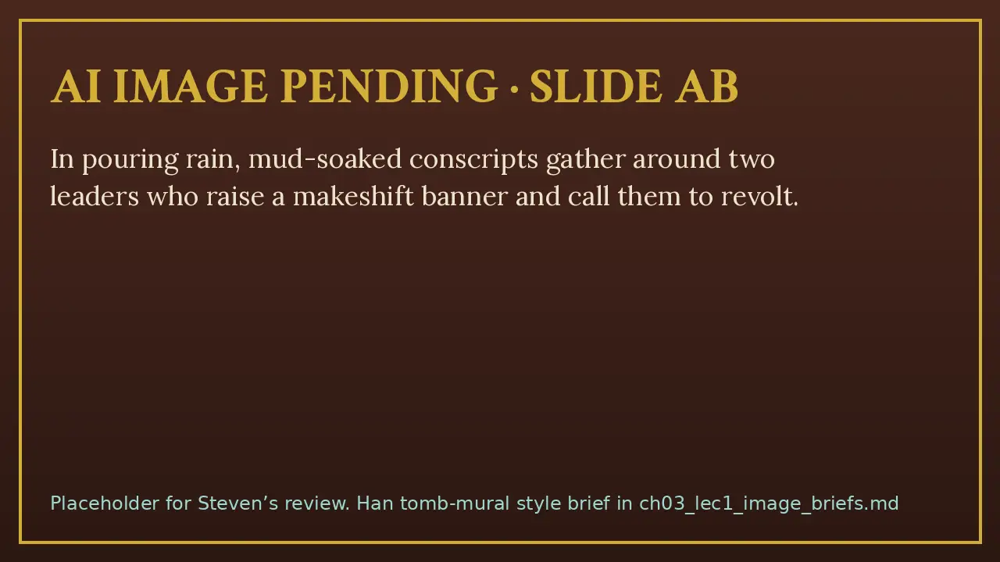
In pouring rain, mud-soaked conscripts gather around two leaders who raise a makeshift banner and call them to revolt. AI-generated interpretation in Han tomb-mural style, not a historical record.
Sources: Ebrey, Ch. 3, p. 42; Sima Qian, Shiji 48.
First Emperor’s death released conflicts the center had been containing
Burdened populations joined or supported rebellion
Former regional elites and military leaders supplied alternative power centers
Centralization left little flexibility when the center failed
×
Centralization
The Qin concentration of authority in the emperor and appointed officials, reinforced by relocating regional nobles and standardizing administration.
Sources: Ebrey, Ch. 3, pp. 42–43.
Part 3 · Legacy · after 206 BCE
Qin Lost the Dynasty but Won the Argument
What survived
Centralized monarchy
Commanderies and counties
Appointed officials and written law
Taxation, labor, roads, records, and communications
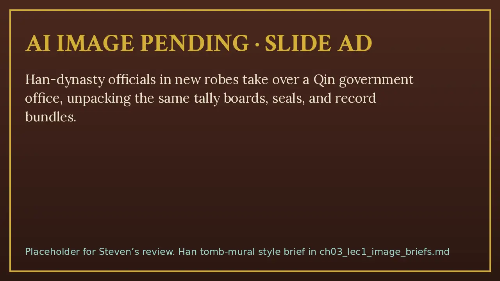
Han-dynasty officials in new robes take over a Qin government office, unpacking the same tally boards, seals, and record bundles. AI-generated interpretation in Han tomb-mural style, not a historical record.
Sources: Ebrey, Ch. 3, pp. 36, 42–43.
Part 3 · Legacy · The paradox
Qin Lost the Dynasty but Won the Argument (continued)
The paradox
The Qin Dynasty failed
The Qin imperial system survived
Han retained and adapted its institutions
Later rulers modified the model
Qin lost the dynasty but won the argument over what a Chinese empire would look like.
Sources: Ebrey, Ch. 3, pp. 36, 42–43.
Self-check · Segment 3 · not graded
Check Yourself: Collapse and Legacy
Answer each question from memory, out loud or on paper, then click Show answer. Nothing here is graded or recorded.
1. When and where did the First Emperor die?
In 210 BCE, while traveling (p. 42).
2. How was the succession manipulated?
The chief eunuch, Zhao Gao, with Li Si, plotted with a younger son; the heir, Prince Fusu, was forced to die and the younger son became Second Emperor (p. 42).
3. Why did Chen Sheng and Wu Guang rebel in 209 BCE?
Delayed by severe weather, they believed missing the deadline meant death, so they rebelled (Sima Qian).
On a smoky battlefield at dusk, rival rebel armies with different banners face each other across the ruins of a Qin fort. AI-generated interpretation in Han tomb-mural style, not a historical record.
Sources: Ebrey, Ch. 3, pp. 42–43.
Beyond the lecture
Pierian Spring
Independent Study
Today's lecture ends here. Continue on your own: the stories below finish this chapter's history, and each ends with a review question to answer.
"A little learning is a dang'rous thing; Drink deep, or taste not the Pierian spring."Alexander Pope, An Essay on Criticism, 1711
Independent study · Near modern Xi’an · from 231 BCE
The Tomb Materialized Central Power
Construction began during the reign
A special district served the site
Thirty thousand families resettled nearby
Hundreds of thousands supplied labor
The emperor's monument was the labor system's largest artifact.
Review question to answer · Q2
Evaluate the role of Qin law as a mechanism for state control and massive infrastructural development. How did the state’s penal system dictate the lives of its subjects?
A vast earthen burial mound rises above a plain as thousands of workers, carts, and overseers swarm around it. AI-generated interpretation in Han tomb-mural style, not a historical record.
Sources: Ebrey, Ch. 3, p. 39.
Independent study · Pits beside the tomb · found 1974
The Army Preserved Glory and Cost
Three pits held thousands of soldiers
Life-sized figures carried real weapons
Discovery began in 1974
Laborers' remains exposed human costs
One system produced an artistic wonder and the workers buried beside it.
Review question to answer · Q2
Evaluate the role of Qin law as a mechanism for state control and massive infrastructural development. How did the state’s penal system dictate the lives of its subjects?
An imperial army reproduced for the afterlife. Photograph of Pit 1.
Sources: Ebrey, Ch. 3, pp. 39–40; Jane Portal, ed., The First Emperor: China’s Terracotta Army (2007).
Sources and image credits
The Stories in This Deck Rest on These Sources
Your textbook
Patricia Buckley Ebrey, A History of China, Chapter 3, “The Founding of the Bureaucratic Empire: Qin-Han China (256 B.C.E.–200 C.E.),” pp. 36–43 (“The Qin Unification,” “The First Emperor,” “The First Emperor’s Tomb,” “Qin Law,” “The Xiongnu and the Great Wall,” and the opening of “The Han Dynasty”). Chapter 2, p. 31 (Lord Shang).
Beyond the textbook
Sima Qian, Shiji (Records of the Grand Historian) 6 (First Emperor), 48 (Chen Sheng), 87 (Li Si). Shuihudi Qin bamboo strips, Hubei (1975). Jane Portal, ed., The First Emperor: China’s Terracotta Army (2007).
Images
Title card, standardization and labor graphics, Qin map, Shuihudi strips photograph, terracotta army photograph and the later portrait of the First Emperor are carried over from the original deck (credits in image_sources.md). All other images are AI-generated interpretations in the Chapter 3 Han tomb-mural style; not primary-source evidence. Each caption says so.